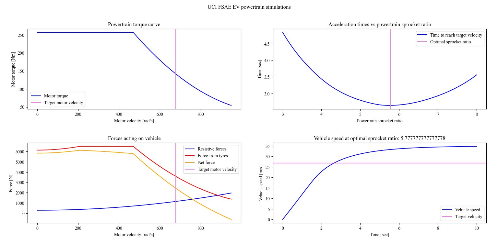

Automotive Hyundai Intern
Hyundai Motor Group
Sand Traction Control & Powertrain Telemetry
Developed and calibrated sand terrain control software for the 2028 Hyundai Santa Fe XRT, modulating electro-hydraulic brake line pressure and torque to sustain vehicle momentum in low-friction terrain.
40+ Strain Gauges Calibrated on 2025 Ford Bronco